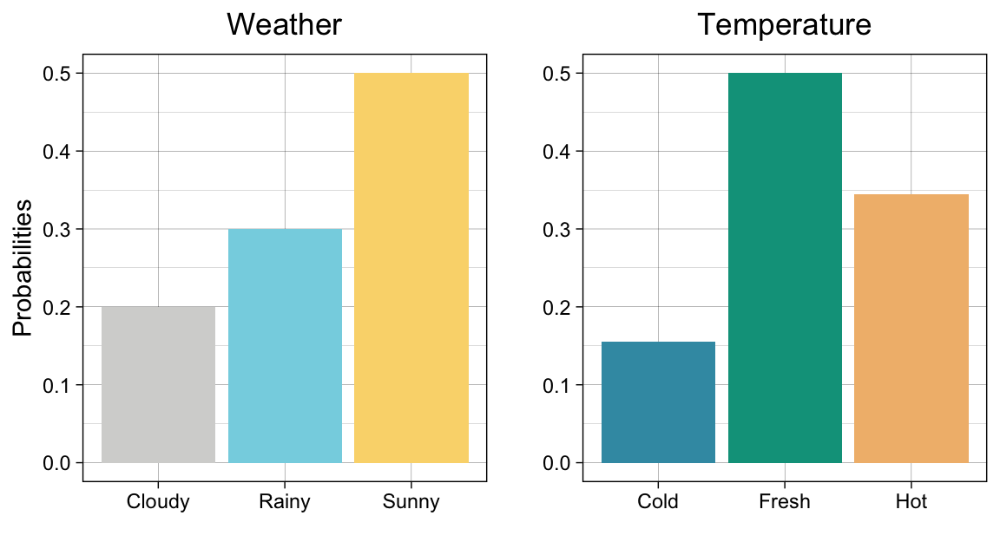

Chapter 1 Mathematical Intuition
Markov Chains are cool! And Hidden Markov Models are even cooler! So, let’s make sure you can get at the cool-stuff by starting off with the necessary basics. In this section, we’ll review conditional probabilities & set up the basis for Hidden Markov Models by getting comfortable with chains first.
1.1 Conditional Probability & Bayes Rule
Basic Concepts
Probability, as a field, formalizes how we predict events with some equally beautiful & ugly notation, inutitive concepts, and complex mathematical principles. But the premise is simple: by ascribing a numeric value to the outcomes of an event happening, we can abstract the real-world and study it with math.
The process of ascribing numeric values to the outcome of an event is called a mapping & by mapping all possible probabilities of an event’s outcomes we create a random variable.
NOTE: This can be confusing! The “random” part of the word doesn’t mean all outcomes have an equal chance of happening, really it means that within an event there are multiple possible outcomes.
Example: Weather & Temperature
Let’s say that the weather is the event, \(W\), whose only outcomes are sunny (\(w_s\)), rainy (\(w_r\)) or cloudy(\(w_c\)). By mapping numeric values (e.g. probabilities) to the outcomes we can turn \(W\) into a random variable. Below, we list all mappings in the probability mass function, \(p_{(W)}(w)\)
\[\begin{aligned} p_{(W)}(w) &= \begin{cases} 0.7, & \text{for } w_s \\ 0.1, & \text{for } w_r \\ 0.2, & \text{for } w_c \\ 0.0, & \text{otherwise} \end{cases} \end{aligned}\]
Now, let’s that the daily temperature (F°) is the event \(T\). Normally, we could say that \(T\) follows a normal distribution with \(\mu = 75 \textbf{ F°}\) and \(\sigma^2 = 625 \textbf{ F°}\), since its a continuous variable. So, \(T \sim N(75, 625)\) and would look something like this

Instead, let’s say that \(T\) is a discrete random variable whose only potential outcomes are cold (\(t_c\)), fresh (\(t_n\)), or hot (\(t_h\)). Then, \(T\) has the probability mass function
\[\begin{aligned} p_{(T)}(t) &= \begin{cases} 0.155, & \text{for } t_c \\ 0.5, & \text{for } t_f \\ 0.345, & \text{for } t_h \\ 0.0, & \text{otherwise} \end{cases} \end{aligned}\]
Below are two graphs summarizing what we know so far about \(W\) and \(T\)

But what happens if the weather depends on the temperature?
Conditional Probabilities
Let’s study the two arbitrary events \(A\), \(B\) & learn some definitions about probability.
Conditional Probability:
The conditional probabilities of \(A\)’s, given \(B\) and \(B\), given \(A\) are written below.
\[P(A|B) \hspace{1 in}P(B|A)\]
Independence: We say that the two events, \(A\) & \(B\) are independent if the conditional probabilities provide us no new-information about either event. So,
\[P(A|B) = P(A) \hspace{1 in}P(B|A) = P(B)\]
Joint Probability: The probability of two events, \(A\) & \(B\) happening at the same time is called a joint probability and is typically denoted by \(P(A\cap B)\). It is calculated below.
\[\begin{aligned} P(A\cap B) &= P(A|B) \cdot P(B)\\ &= P(A) \cdot P(B) && \text{if independent} \end{aligned}\]
It’s generally true that the weather on a particular day, depends on the temperature. This implies that \(W\) and \(T\) are conditional events with conditional probabilities. So,
\[P(W\mid T) \neq P(W)\]
Bayes’ Rule & LOTP
Conceived by Reverend Thomas Bayes in the 18th Century, posthumously published by his friend Richard Price, and then formalized into an equation by Pierre-Simon Laplace, Bayes’ Rule is a cornerstone equation in modern statistics & probability. I’ve written it below
\[P(A \mid B) = \frac{P(A \cap B)}{P(B)}=\frac{P(A)\cdot P(B|A)}{P(B)}\]
NOTE: Above you’ll notice that we’re looking at the probability of \(A\) & \(B\), divided by the probability of \(B\). We are dividing by \(P(B)\) to normalize & isolate the probability of \(A\), under the conditions we observe \(B\).
Quick Check: If \(A\) & \(B\) are independent, how would you further simplify the numerator of Bayes’ Rule?
The denominator of Bayes’ Rule, \(P(B)\) is called the marginal probability of \(B\).
The marginal probability can either be
- given
- computed with the law of total probability or (LOTP).
LOTP states that \[\begin{aligned} P(B) = \sum_{i=1}^n P(B \cap A_i) &= P(B \cap A_1) + P(B\cap A_2) + \dots + P(B\cap A_n) \\ &= P(B \mid A_1)P(A_1) + P(B\mid A_2)P(A_2) + \dots + P(B\mid A_n)P(A_n) \\ \end{aligned}\]
Note: Looks scary! Really it’s like calculating the probability of \(B\) in each subcategory of \(A\), multiplying by the probability of that sub-\(A\), then adding it all together.
1.2 Markov Chains
Stochastic processes are events which have some element of randomness in their outcomes. The amount of ‘randomness’ & the type of events can vary depending on the context. In turn, studying the properties of stochastic processes often requires the implementation of many different techniques which go well beyond the boundaries of statistics. And with a litany of applications across so many domains of knowledge, studying stochastic processes can involve Physics, Linguistics, Sociology, Public Health, Geography & more.
Note: There is some nuance in the language we use to describe randomness, probabilistic, and stochastic, but it is murky. So, for now, let’s stick with the above definition & some enjoy the interchangeability between random, stochastic, and probabilistic.
So, this section will only be a teensy snippet of the wide topics covered in studying stochastic processes.
Markov Chains
Markov chains are a subclass of stochastic process which describe partially-random events occurring over time. In this section, we will look at Markov Chains, with some renewed interest in the weather.
Markov Property
State Space
Transition Probabilities & Matrices
Visualizing a Markov Chain - Will Hipson’s Dot Visualization
- embedding Victor Powell’s Website.
1.3 Video Resources
References
Hipson, Will. 2020. “Visualizing A Markov Chain.” Will Hipson’s Personal Website. March 23, 2020. https://willhipson.netlify.app/post/markov-sim/markov_chain/.
Johnson, Alicia, Miles Ott, and Mine Dogucu. 2020. “Bayes’ Rule.” In Bayes Rules! An Introduction to Bayesian Modeling with R . https://www.bayesrulesbook.com.
Kang, Eugine. 2017. “Hidden Markov Model.” Medium. August 31, 2017. https://medium.com/@kangeugine/hidden-markov-model-7681c22f5b9.
Lay, David C. 2012. “Applications to Markov Chains.” In Linear Algebra and Its Applications, 4th ed., 253–62. Boston: Pearson College Division.
Powell, Victor, and Lewis Lehe. 2014. “Markov Chains Explained Visually.” Explained Visually. November 7, 2014. https://setosa.io/ev/markov-chains/.